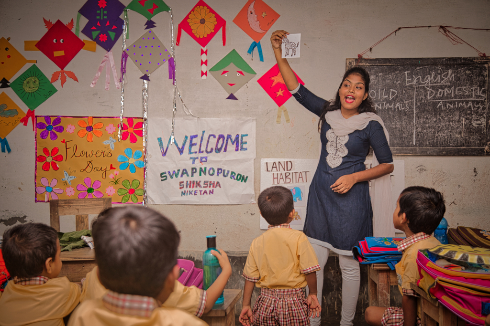
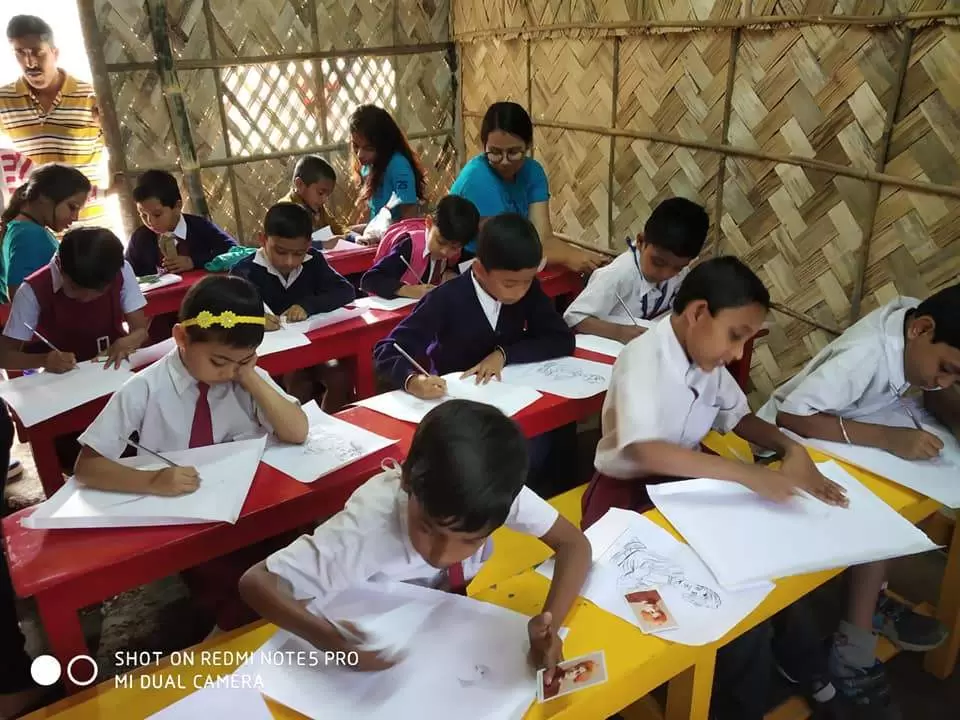

Empowerment through education has always been the mantra for us at SWS. Our ambition of enabling the Sundarbans’ livelihood will only be realised if we ensure that the youngsters of this region are not driven into child labour and instead have the chance to receive an education. We believe that education is an essential platform for the overall betterment of any society. Strategically, we have approached this massive task with a 3-step model.

Our school began as a pre-school in the year 2012. Our original thought was to turn it into a formal education centre, empowering the community and providing a brighter future for the children in the Sundarbans. When “Swapnopuron Shishu Niketan” was founded in 2012, the English language was our primary focus. Eventually, a formal educational framework emerged, and regular classroom instruction began, which encompassed disciplines such as social science, mathematics, storytelling, arts and crafts, etc. On any given day, we have around 250 students in our classrooms. The school operates six days a week.
As an integral part of our primary focus, we give stress on communicative English and children of Classes 6-10 regularly attend English Learning sessions. Our motto is to make learning fun and interesting, so; the motivation ‘to learn’ is there – ensuring almost no dropouts